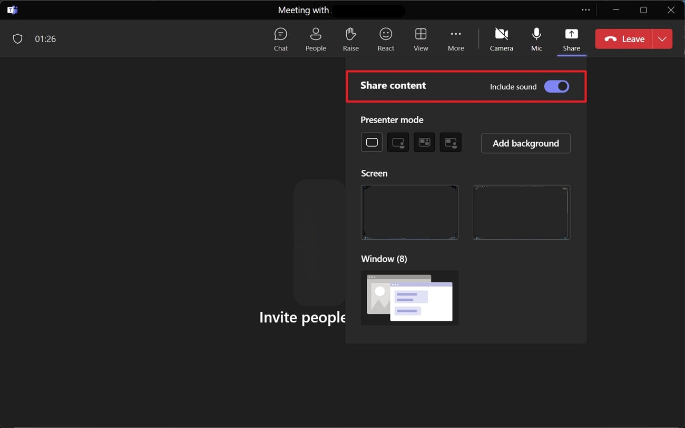
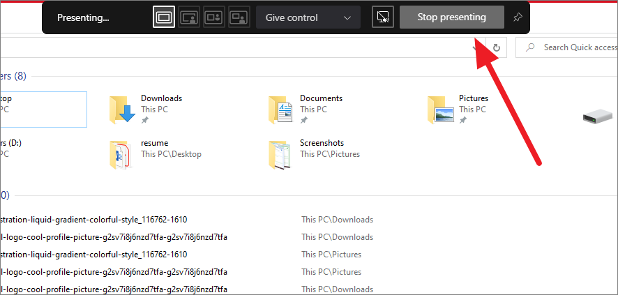
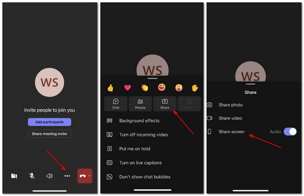

MEETING SETUP
Stagelight
with Microsoft Teams.
Give your Teams meeting a countdown with music.
Which app do I need?
Stagelight is a website. There is no Stagelight download to install. “Downloaded app” below means your meeting app.
The downloaded Teams app runs on Windows or Mac. Stagelight runs separately in your browser. Follow the numbered steps below.
Before you share
Use headphones. Close other noisy tabs. Try a music preview first. Share only the window or tab you want attendees to see.
Real screenshots from published tutorials. App versions and example window names may differ; follow the named controls.
Computer: downloaded app
Prepare Stagelight
Add your title and music in a separate browser window.

Your setup stays in Stagelight. This example has one Audius song selected.Screenshot: Stagelight. Click image to enlarge. Open Share in Teams
Join the meeting, then click Share in the meeting toolbar.

Share opens this panel. Choose your Stagelight window, not the Teams meeting window.Screenshot: Avica. Click image to enlarge. Include the music
Turn on Include sound before selecting what to share.

The Include sound switch must be on for attendees to hear your music.Screenshot: Microsoft Support. Click image to enlarge. Select the Stagelight window
Under Window, choose the browser window containing Stagelight. Screen shares your entire desktop instead.
Share opens this panel. Choose your Stagelight window, not the Teams meeting window.Screenshot: Avica. Click image to enlarge. Begin and confirm
Return to Stagelight. Click Begin presentation at the top right. Ask an attendee to confirm both screen and audio.
Your setup stays in Stagelight. This example has one Audius song selected.Screenshot: Stagelight. Click image to enlarge. End the screen share
Press Esc in Stagelight to stop its presentation, then choose Stop presenting in Teams.

Stop presenting ends the screen share. It does not leave the call.Screenshot: All Things How. Click image to enlarge.
NO MEETING APP DOWNLOAD
Computer browser
- In Teams for web, choose Share → Screen, window, or tab. Select the Stagelight tab and enable Also share tab audio. Window or screen sharing may offer system audio instead.
- Select Stagelight in the browser picker.
- Enable tab audio, then Share.
- Return to Stagelight and begin.

Example Chrome picker shown for Meet. Teams and Zoom use a similar browser dialog with their own site name.
DOWNLOADED MEETING APP + STAGELIGHT IN YOUR BROWSER
Phone or tablet
Android
- In the Teams mobile meeting, tap Share → Share screen → Share screen with audio
- Accept the device prompt, then switch to Stagelight in your browser
- Return to Teams to stop presenting.

iPhone & iPad
- In the Teams mobile meeting, choose Share → Share screen → Share screen with audio → Start Broadcast
- Switch to Stagelight in Safari
- Return to Teams to stop the broadcast.
Test on your device first
These are the meeting provider’s sharing steps. Stagelight playback while switching between mobile apps is not verified. Your phone may pause music or limit screen audio. If that happens, present from a computer.
Mobile sharing can expose your whole screen and notifications. Enable Do Not Disturb and stop sharing before opening anything private.
Based on Microsoft Teams sharing documentation ↗. Button names can vary by version and device.
No sound in the meeting?
If sound is missing, check Include sound or Share audio. Confirm the music plays locally. Your Teams app, device, or organization may limit audio sharing.
Use the Teams desktop app for this walkthrough. On a Mac, Teams may prompt for an audio component or recording permission; finish its setup before your event.
Hearing music locally does not prove the meeting hears it. Ask an attendee before people arrive.
Need another hand?
Find audio fixes or tell us what went wrong.